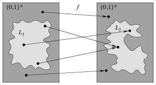

Outline
- Don’t Let This Happen to You
- Problem Classes
- P and NP Classes
- Encoding Problems and Polynomial Time Verification
- NP Completeness
- Constructing NPC
- NP Complete Problems
Don’t Let This Happen to You
Suppose you worked in industry, and your boss calls you to your office and says they want to enter the emerging “iThingy” market. He wants to offer customized iThingies, and it’s important to have an algorithm that, given a specification, can efficiently construct a design that meets the maximum number of requirements in the lowest cost way.
You try for weeks but just can’t seem to find an efficient solution. Every solution that you come up with amounts to trying all combinations of components, in exponential time. More efficient algorithms fail to find optimal solutions.
You don’t want to have to go your boss and say “I’m sorry I can’t find an efficient solution. I guess I’m just too dumb.”

You would like to be able to confidently stride into his office and say “I can’t find an efficient solution because no such solution exists!” Unfortunately, proving that the problem is inherently intractable is also very hard: in fact, no one has succeeded in doing so.
Today we introduce a class of problems that no one has been able to prove is intractable, but nor has anyone been able to find an efficient solution to any of them.
If you can show that the iThingy configuration problem is one of these problems, you can go to your boss and say, “I can’t find an efficient solution, but neither can all these smart and famous computer scientists!”
(Next week we’ll cover what you would say next. Thanks to Garey & Johnson (1979) for the story & images.)
Problem Classes
For most of this semester, we abstracted away from the study of particular implementations to study the computational complexity of algorithms independently of their implementation. More precisely, we made universally quantified statements to the effect that all possible implementations of an algorithm would exhibit certain asymptotic growth within constant factors of each other.
Now we abstract further, to study the the computational complexity of problems, independently of the algorithms used to solve them. We will be trying to make universally quantified statements about the computational complexity of all possible algorithms for a problem. (We won’t always succeed in doing this.)
For example, when we showed that any comparison-based sorting algorithm is O(n lg n) in Topic 10, we were making a claim about a class of algorithms for a problem.
Tractability and Decidability
Broadly, we are concerned with three classes of problems:
- Tractable problems, generally considered to be those solvable in polynomial time (most of the problems considered so far in this course).
- Examples: Any problem studied this semester for which we have solutions bounded by nk for fixed k.
- Some solutions are not strictly polynomial but are bounded above by a polynomial (e.g., n lg n for sorting is bounded by n2), so sorting is considered polynomial.
- Intractable problems are those solvable in super-polynomial but not polynomial time. Today we will be concerned with the question of which problems are in this class.
- Examples: Enumerate all binary strings of length n; Compute the power set (set of all sets) of n items. The solutions consist of 2_n_ binary strings, or 2_n_ sets, respectively, so even if the solution were available instantly exponential time would be required just to output the result!
- Unknown: Integer linear programming, finding longest simple paths in a graph, finding the optimal way to schedule tasks on factory machines under scheduling and deadline constraints, determining whether certain boolean formulas can be simultaneously satisfied, optimizing circuit layouts under certain constraints, finding the cheapest way to visit all of a set of cities without repeating any and returning to your starting city, finding the optimal partition of graphs under a modularity metric, and many many more …
- Unsolvable problems for which no algorithm can be given guaranteed to solve all instances of the problem. These problems are also known as Undecidable.
- Example: the halting problem (given a description of a program and arbitrary input, decide whether the program will halt on that input), demonstrated by Alan Turing.
Hierarchy of Problem Classes
The hierarchy of problem classes was illustrated at the beginning of the semester with this diagram:

We have spent most of our time on problems in the lower half of this diagram. Now we consider whether there are problems that are intrisically in the upper half.
P and NP Classes
P denotes the class of problems solvable in polynomial time, such as most of the problems we have considered this semester.
Nondeterministic Polynomial
NP denotes the class of problems for which solutions are verifiable in polynomial time: given a description of the problem x and a “certificate” y describing a solution (or providing enough information to show that a solution exists) that is polynomial in the size of x, we can check the solution (or verify that a solution exists) in polynomial time as a function of x and y.
Problems in NP are decision problems: we answer “yes” or “no” to whether the certificate is a solution. The polynomial size requirement on y rules out problems that take exponential time just to output their results, such as the enumeration of all binary strings of length n. (One could check the solution in time polynomial in y, but y would be exponential in x, so overall the problem is not tractable.)
These problems are called “nondeterministic polynomial” because one way of defining them is to suppose we have a nondeterministic machine that, whenever faced with a choice, can guess the correct alternative, producing a solution in polynomial time based on this guess. (Amazingly, no one has been able to prove that such a fanciful machine would help!)
Another way to think of this is that the machine can copy itself at each choice point, essentially being multithreaded on an infinite number of processors and returning the solution as soon as the solution is found down a span of polynomial depth (see Topic on Multithreading).
(Your text does not take either of these approaches, preferring the “certificate” definition. We elaborate on this later, but not in depth.)

Relationship of P to NP
Clearly, P is a subset of NP.
The million dollar question (literally, see the Clay Mathematics Institute Millenium Prize for the P vs NP Problem ), is whether P is a strict subset of NP (i.e., whether there are problems in NP that are not in P, so are inherently exponential).

NP Completeness
Theorists have been able to show that there are problems that are just as hard as any problem in NP, in that if any of these NP-Hard problems are solved then any problem in NP can be solved by reduction to (translating them into instances of) the NP-Hard problem.
Those NP-Hard problems that are also in NP are said to be ** NP Complete, denoted **NPC, in that if any NPC problem can be solved in polynomial time then all problems in NP can also be solved in polynomial time.
The study of NP Completeness is important: the most cited reference in all of Computer Science is Garey & Johnson’s (1979) book Computers and Intractability: A Guide to the Theory of NP-Completeness. (Your textbook is the second most cited reference in Computer Science!)
In 1979 Garey & Johnson wrote, “The question of whether or not the NP-complete problems are intractable is now considered to be one of the foremost open questions of contemporary mathematics and computer science.”
Over 30 years later, in spite of a million dollar prize offer and intensive study by many of the best minds in computer science, this is still true: No one has been able to either
- Prove that there are problems in NP that cannot be solved in polynomial time (which would mean P ≠ NP), or
- Find a polynomial time solution for a single NP Complete Problem (which would mean P=NP).
Although either alternative is possible, most computer scientists believe that P ≠ NP.
Discriminating P and NP problems
Problems that look very similar to each other may belong to different complexity classes (if P ≠ NP), for example:
-
Linear programming can be solved in polynomial time (the simplex algorithm), but if we require that the assigned values be integers we have the integer linear programming problem, which is NP-Hard.
-
Shortest paths in a graph can be found in O(VE) or better, but the problem of finding longest simple paths is NP-Hard (deciding whether there is a path longer than length k is NP-Complete).
-
An Euler tour that traverses each edge of a graph once can be found in O(E) time, but finding a Hamiltonian cycle that traverses each vertex exactly once via a simple cycle is NP-Hard.
-
We can determine whether a boolean formula in 2-Conjunctive Normal Form is satisfiable in polynomial time, but doing the same for a formula in 3-Conjunctive Normal Form is NP-Complete.
Clearly, it is important that we be able to recognize such problems when we encounter them and not share the fate of the iThingy algorithm designer. (In the next topic we’ll discuss approximation algorithms for dealing with them in a practical way.)
Encoding Problems and Polynomial Time Verification
This section discuses some concepts used in the study of complexity classes. We are not delving into formal proofs such as those provided in the text, so some of the material of this section is not essential to the discussion following, but familiarity with the terminology may help you understand why the remaining notes talk about “languages”.
Abstract Problems
An abstract problem Q is a binary relation mapping problem instances I to problem solutions S.
NP Completeness is concerned with decision problems: those having a yes/no answer, or in which Q maps I to {0, 1}.
Many problems are optimization problems, which require that some value be minimized (e.g., finding shortest paths) or maximized (e.g., finding longest paths).
We can easily convert an optimization problem to a decision problem by asking: is there a solution that has value lower than (or higher than) a given value?
Encodings and Concrete Problems
To specify whether an abstract problem is solvable in polynomial time, we need to carefully specify the size of the input.
An encoding of a problem maps problem instances to binary strings. We consider only “reasonable” encodings
- For example, we do not represent numbers in unary format.
- (If we did, the input to the problem of enumerating all binary strings of length n would itself be of length 2_n, so an “O(_n)” solution would be possible!)
- A “reasonable” encoding an integer is polynomial related to its representation, and a set of objects polynomially related to its encoding. Standard codings such as ASCII meet this requirement.
Once problems and their solutions are encoded, we are dealing with concrete problem instances. Then a problem Q can be thought of as a function Q : {0, 1}* -> {0, 1}, or if it is a decision problem, _Q_ : {0, 1} -> {0, 1}. (Q(x) = 0 for any string x ∈ Σ* that is not a legal encoding.)
Accepting and Deciding Formal Langauges
By casting computational problems as decision problems, theorists can use concepts from formal language theory in their proofs. We are not doing these proofs but you should be aware of the basic concepts and distinctions:
A language L over an alphabet Σ is a set of strings made up of symbols from Σ.
An algorithm A ** accepts** a string x ∈ {0, 1}* if given x the output of A is 1.
The language L accepted by A is the set of strings L = {x ∈ {0, 1}* : A(x) = 1}.
But A need not halt on strings not in L. It could just never return an answer. (The existence of problems like the Halting Problem necessitate considering this possibility.)
A language is decided by an algorithm A if it accepts precisely those strings in L and rejects those not in L (i.e., A is guaranteed to halt with result 1 or 0).
A language is accepted in polynomial time by A if it is accepted by A in time O(nk) for any encoded input of length n and some constant k. Similarly, a language is decided in polynomial time by A if it is decided by A in time O(nk).
Polynomial Time Verification
A complexity class is a set of languages for which membership is determined by a complexity measure. (Presently we are interested in the running time required of any algorithm that decides L, but complexity classes can also be defined by other measures, such as space required.) For example, we can now define P more formally as:
P = {L ⊆ {0, 1}* : ∃ algorithm A that decides L in polynomial time}.
A verification algorithm A(x, y) takes two arguments: an encoding x of a problem and a certificate y for a solution. A returns 1 if the solution is valid for the problem. (A need not solve the problem; only verify the proposed solution.)
The language verified by a verification algorithm A is
L = {x ∈ {0, 1}: ∃ _y_ ∈ {0, 1} such that A(x, y) = 1}.
We can now define the complexity class NP as the class of languages that can be verified by a polynomial time algorithm, or formally:
L ∈ NP iff ∃ polynomial time algorithm A(x, y) and constant c such that:
L = {x ∈ {0,1}* : ∃ certificate y with |y| = O(|x|c) such that A(x,y) = 1}.

The constant c ensures that the size of the certificate y is polynomial in the problem size, and also we require that A runs in time polynomial in its input, which therefore must be polynomial in both |x| and |y|.
For example, although only exponential algorithms are known for the Hamiltonian Cycle problem, a proposed solution can be encoded as a sequence of vertices and verified in polynomial time.
NP Completeness
The NP-Complete problems are the “hardest” problems in NP, in that if one of them can be solved in polynomial time then every problem in NP can be solved in polynomial time. This relies on the concept of reducibility.
Reducibility

A problem A can be polynomially reduced to a problem B if there exists a polynomial-time computable function f that converts an instance α of A into an instance β of B.

Stated in terms of formal languages, L_1 is reducible to _L_2 if there exists a polynomial-time computable function _f : {0, 1}* -> {0, 1}* such that:
x ∈ L_1 iff _f(x) ∈ L_2, ∀ _x ∈{0, 1}*.
NP Completeness Defined
A language L ⊆ {0, 1}* is NP-Complete (in NPC) if
- L ∈ NP, and
- Every L’ ∈ NP is polynomial reducible to L.
Languages satisfying 2 but not 1 are said to be NP-Hard. (This includes optimization problems that can be converted to decision problems in NP.)
The major Theorem of this lecture is:
**If any NP-Complete problem is polynomial-time solvable, then P = NP. **
Equivalently, if any problem in NP is not polynomial-time solvable, then no NP-Complete problem is polynomial time solvable.
The expected situation (but by no means proven) corresponds to the second statement of the theorem, as depicted to the right.
Constructing NPC
In order to construct the class NPC, we need to have one problem known to be in NPC. Then we can show that other problems are in NPC by reducibility proofs (reducing the other candidates to this known problem).
Circuit Satisfiability: An Initial Problem
In 1971, Cook defined the class NPC and proved that it is nonempty by proving that the Circuit Satisfiability _ (CIRCUIT-SAT)_ problem is NP-Complete.
This problem asks: given an acyclic boolean combinatorial circuit composed of AND, OR and NOT gates, does there exist an assignment of values to the input gates that produces a “1” at a designated output wire? Such a circuit is said to be satisfiable.
The first part of the proof, that CIRCUIT-SAT is in NP, is straightforward.
- Given as certifiate an assignment of boolean values to each of the wires in a circuit, one can check that the assignment meets the logic conditions of each component, which clearly can be done in polynomial time in the size of the description of the circuit.
- Alternatively, one can give as certificate only the input values, and verify by simulating the circuit, propagating values through the gates and to the designated output wire, in polynomial time.
The second part of the proof, that CIRCUIT-SAT is NP-Hard, was complex. The gist was as follows.
-
Given any language L corresponding to a problem in NP, there must exist an algorithm A that verifies L in polynomial time.
-
We can represent the computation of A as a sequence of configurations or states of a machine M on which the algorithm runs. (A configuration represents the state of the computer, including program, storage and program counters.)
-
First, a boolean circuit corresponding to M is constructed.
-
Then the reduction makes a copy of the boolean circuit for each possible state (computational configuration) of M, feeding the output of one configuration into the input of another configuration in such a manner that computer memory is no longer needed: all state is encoded in the circuit wiring. The result is a single combinatorial circuit.
-
Crucially, this transformation can be done in polynomial time, as A verifies L in polynomial time, so only needs to make a polynomial number of copies of the circuit for M. (Since state changes only with new input, the number of copies of M is bounded by the input size n.)
-
Then an algorithm that solves CIRCUIT-SAT can be used to simulate A, deciding L.
NP Completeness Proofs by Reduction
Polynomial reduction is transitive:
If L is a language such that L’ reduces polynomially to L for some L’ ∈ NPC, then L is NP-Hard.
Furthermore, if L ∈ NP, then L ∈ NPC.
Transitivity follows from the definitions and that the sum of two polynomials is itself polynomial.
This means that we can prove that other problems are in NPC without having to reduce every possible problem to them. The general procedure for proving that L is in NPC is:
- Prove L ∈ NP (show one can check solutions in polynomial time).
- Prove L is NP-Hard: 1. Select a known language L’ in NPC 2. Describe an algorithm A that computes function f mapping every instance x ∈ {0, 1}* of L’ to some appropriately constructed instance f(x) of L. 3. Prove that x ∈ L’ iff f(x) ∈ L, ∀ x ∈ {0, 1}*. 4. Prove that A runs in polynomial time.
Important: Why doesn’t mapping every instance of L to some instances of L’ work?
Now we can populate the class NPC, first by reducing some problems to CIRCUIT- SAT, and then other problems to these new problems. Literally thousands of problems have been proven to be in NPC by this means. Let’s look at a few.

NP Complete Problems
The text steps through reduction of problems as shown in the figure. We do not have time to go through the proofs, and it is more important that you are aware of the diversity of problems in NPC than that you are able to do NP- Completeness proofs. So we just list them briefly.
Satisfiability (SAT)
An instance is a boolean formula φ composed of
- n boolean variables x_1 … _x__n,
- m boolean connectives of two inputs and one output: ∧, ∨ ¬ -> ↔, and
- parentheses.
A truth assignment is a set of values for the variables of φ and a ** satisfying assignment** is a truth assignment that evaluates to 1 (true).
SAT = {⟨φ⟩ : φ is a satisfiable boolean formula}
There are 2_n_ possible assignments, but a given assignment can be checked in polynomial time.
CIRCUIT-SAT is reduced to SAT in polynomial time through a construction that turns CIRCUIT-SAT gates into small logical formulas for SAT:
- Define a variable xi for each of the wires.
- Write a formula φ that is the conjunction of the variable for the output wire plus a logical expression for each of the logic gates.
The resulting boolean formula is satisfied just when the circuit is satisfied. (You can verify that the formula shown is equivalent to the circuit.)
_x_10 ∧ (_x_4 ↔ ¬ _x_3) ∧ (_x_5 ↔ (_x_1 ∨ _x_2)) ∧ (_x_6 ↔ ¬ _x_4) ∧ (_x_7 ↔ (_x_1 ∧ _x_2 ∧ _x_4)) ∧ (_x_8 ↔ (_x_5 ∨ _x_6)) ∧ (_x_9 ↔ (_x_6 ∨ _x_7)) ∧ (_x_10 ↔ (_x_7 ∧ _x_8 ∧ _x_9))
3-Conjunctive Normal Form Satisfiability (3-CNF-SAT)
Reduction proofs require that we handle any possible case of a known NPC problem. It would be complicated to handle all the possible forms of SAT formulas, so it is useful to have a more restricted logical form for the target for reduction proofs. 3-CNF serves this purpose.
A literal in a boolean formula is an occurrence of a variable or its negation.
A boolean formula is in conjunctive normal form (CNF) if it is a conjunction of clauses, each of which is the disjunction of one or more literals.
A boolean formula is in 3-conjunctive normal form (3-CNF) if each clause has exactly three distinct literals. For example:
(_x_1∨ ¬_x_1 ∨ ¬_x_2) ∧ (_x_3 ∨ _x_2 ∨ _x_4) ∧ (¬_x_1 ∨ ¬_x_3 ∨ ¬_x_4)
3-CNF-SAT asks whether a boolean formula is satisfiable by an assignment of truth values to the variables.
There are an exponential possible number of variable assignments, but a given one can be checked in polynomial time merely by substituting and evaluating the expression.
SAT can be reduced to 3-CNF-SAT through a polynomial-time process of:
- parsing the SAT expression into a binary tree with literals as leaves and connectives as internal nodes;
- introducing a variable yi for the output of each internal node;
- rewriting as the conjunction of the root variable and a clause for each node of the binary tree (yi ↔ the literal for its child nodes);
- converting each clause to conjunctive normal form (see text), first by converting to disjunctive normal form and then applying DeMorgan’s laws to convert to CNF; and then
- supplying dummy variables as needed to convert clauses of 1 or 2 variables into 3-CNF.

For ((_x_1 -> _x_2) ∨ ¬((¬_x_1 ↔ _x_3) ∨ _x_4)) ∧ ¬_x_2, the tree is shown to the right and the expression resulting from the tree is shown below.
_y_1 ∧ (_y_1 ↔ (_y_2 ∧ ¬_x_2)) ∧ (_y_2 ↔ (_y_3 ∨ _x_4))
∧ (_y_3 ↔ (_x_1 -> _x_2)) ∧ (_y_4 ↔ ¬_y_5)
∧ (_y_5 ↔ (_y_6 ∨ _x_4)) ∧ (_y_6 ↔ (¬_x_1 ↔ _x_3))
The remainder of the conversion uses DeMorgan’s laws (see the text for the step by step description):
¬(a ∧ b) ≡ ¬a ∨ ¬b
¬(a ∨ b) ≡ ¬a ∧ ¬b
resulting in:
(¬_y_1 ∨ ¬_y_2 ∨ ¬_x_2) ∧ (¬_y_1 ∨ _y_2 ∨ ¬_x_2) ∧ (¬_y_1 ∨ _y_2 ∨ _x_2) ∧ (_y_1 ∨ ¬_y_2 ∨ _x_2).

CLIQUE
A clique in an undirected graph G = (V, E) is a subset V’ ⊆ V, each pair of which is connected by an edge in E (a complete subgraph of G). (Example cliques are shown.)
The clique problem is the problem of finding a clique of maximum size in G. This can be converted to a decision problem by asking whether a clique of a given size k exists in the graph:
CLIQUE = {⟨G, k⟩ : G is a graph containing a clique of size k}

One can check a solution in polynomial time.
3-CNF-SAT is reduced to CLIQUE by a clever reduction illustrated in the figure.
- There is a vertex for every literal
- There is an edge between vertices only if the corresponding literals are in different triples and the literals are consistent (i.e., one is not the negation of the other).
If there are k clauses we ask whether the graph has a k-clique. Such a clique exists if and only if there is a satisfying assignment.
- The fact that there is a k-clique means there are k vertices that are all connected to each other.
- The fact that two vertices are connected to each other means that they can receive a consistent boolean assignment, and that they are in different clauses.
- Since there are k vertices then a literal from each of the k clauses must be satisfied.
Any arbitrary instance of 3-CNF-SAT can be converted to an instance of CLIQUE with this particular structure. That means if we can solve CLIQUE we can solve any instance of 3-CNF-SAT. Mapping an arbitrary instance of CLIQUE to a specialized instance of 3-CNF-SAT would not work.
Vertex Cover
A vertex cover of an undirected graph G = (V, E) is a subset V’ ⊆ V such that if (u, v) ∈ E then u ∈ V’ or v ∈ V’ or both.
Each vertex “covers” its incident edges, and a vertex cover for G is a set of vertices that covers all the edges in E.
The Vertex Cover Problem is to find a vertex cover of minimum size in G. Phrased as a decision problem,
VERTEX-COVER = {⟨G, k⟩ : graph G has a vertex cover of size k}
There is a straightforward reduction of CLIQUE to VERTEX-COVER, illustrated in the figure. Given an instance G=(V,E) of CLIQUE, one computes the complement of G, which we will call Gc = (V,Ē), where (u,v) ∈ Ē iff (u,v) ∉ E. The graph G has a clique of size k iff the complement graph has a vertex cover of size |V| - k.
Hamiltonian Cycle (HAM-CYCLE)
HAM-CYCLE = {⟨G⟩ : G is a Hamiltonian graph}
The Hamiltonian Cycle problem is shown to be in NPC by reduction of VERTEX- COVER to HAM-CYCLE.
The construction converts edges of G an instance of VERTEX-COVER into subgraph “widgets” through which one can find a portion of a Hamiltonian Cycle only if one or both of the vertices of the edge are in a covering set. There is one such widget per edge.

Any Hamiltonian cycle must include all the vertices in the widget (a), but there are only three ways to pass through each widget (b, c, and d in the figure). If only vertex u is included in the cover, we will use path (b); if only vertex v then path (d); otherwise path (c) to include both.
The widgets are then wired together in sequences that chain all the widgets that involve a given vertex, so if the vertex is selected all of the widgets corresponding to its edges will be reached.

Finally, k selector vertices are added, and wired such that each will select the k_th vertex in the cover of size _k. I leave it to you to examine the discussion in the text, to see how clever these reductions can be!
Traveling Salesperson Problem (TSP)
Finally, one of the more famous problems: Suppose you are a traveling salesperson, and you want to visit n cities exactly once in a Hamiltonian cycle, but choosing a tour with minimum cost.
TSP = {⟨G, c, k⟩ : G = (V, E) is a complete graph,
c : V x V -> ℕ,
k ∈ ℕ, and
G has a traveling-salesperson tour with cost at most k}
Only exponential solutions have been found to date, although it is easy to check a solution in polynomial time.
The reduction represents a HAM-CYCLE problem as a TSP problem on a complete graph, but with the cost of the edges in TSP being 0 if the edge is in the HAM-CYCLE problem, or 1 if not.
Subset-Sum Problem (SUBSET-SUM)
Many NP-Complete problems are of a numerical nature. We already mentioned integer linear programming. Another example is the subset-sum problem: given a finite set S of positive integers and an integer target t > 0, does there exist a subset of S that sums to t?
SUBSET-SUM = {⟨S, t : ∃ subset S’ ⊆ S such that t = Σ_s∈_S’__s}
The proof reduces 3-CNF-SAT to SUBSET-SUM. Please see the text for the details of yet another clever reduction! Briefly:
- It involves constructing two numbers for each variable xi (one for the varaible and one for its negation), and two numbers for each clause Cj (these will hold “slack variables” needed to meet the target sum).
- The digits of the numbers are arranged in columns.
- The numbers for literals (variables and their negations) have a “1” in the column that indicates which variable it corresponds to, and also a “1” in the columns for the clauses in which that literal occurs.
- The numbers for clauses have either a 1 or a 2 in the column corresponding to that clause.
- The target value t has a 1 in each digit labeled by a variable and a 4 in each digit labeled by a clause.
- The only way one can achieve this target sum is to select those numbers corresponding to the literals that are satisfied in each clause, plus the required slack variables to reach 4.
For example, see how this clause maps to the table shown:
(_x_1 ∨ ¬_x_2 ∨ ¬_x_3) ∧ (¬_x_1 ∨ ¬_x_2 ∨ ¬_x_3) ∧ (¬_x_1 ∨ ¬_x_2 ∨ _x_3) ∧ (_x_1 ∨ _x_2 ∨ _x_3).
Other Problems
One can find large catalogs of other problems online, starting with those identified in the book Garey & Johnson (1979), Computers and Intractability. See for example Wikipedia. Following Garey & Johnson’s outline they list problems in:
- Graph theory 1. Covering and partitioning 2. Subgraphs and supergraphs 3. Vertex ordering 4. Iso- and other morphisms 5. Miscellaneous
- Network design 1. Spanning trees 2. Cuts and connectivity 3. Routing problems 4. Flow problems 5. Miscellaneous 6. Graph Drawing
- Sets and partitions 1. Covering, hitting, and splitting 2. Weighted set problems 3. Set partitions
- Storage and retrieval 1. Data storage 2. Compression and representation 3. Database problems
- Sequencing and scheduling 1. Sequencing on one processor 2. Multiprocessor scheduling 3. Shop scheduling 4. Miscellaneous
- Mathematical programming
- Algebra and number theory 1. Divisibility problems 2. Solvability of equations 3. Miscellaneous
- Games and puzzles
- Logic 1. Propositional logic 2. Miscellaneous
- Automata and language theory 1. 1 Automata theory 2. 2 Formal languages
- Computational geometry
- Program optimization 1. 1 Code generation 2. 2 Programs and schemes
- Miscellaneous
There are also problems for which their status is as of yet unknown. Much work to do!
Dan Suthers Last modified: Mon Apr 21 11:46:18 HST 2014
Images are from the instructor’s material for Cormen et al. Introduction to
Algorithms, Third Edition; Garey & Johnson (1979), Computers and
Intractability; and Weisstein, Eric W. “Complete Graph.” From MathWorld–A
Wolfram Web Resource. http://mathworld.wolfram.com/CompleteGraph.html,
xkcd.com, and possibly other sites whom I thank for not suing me.